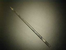

| Material: | ||||
| Clave | Material | Cantidad | Maletín | |
|  | I-KO-KDSMAXII-000 |
1 | Q |
|
|
I-RV-VASOPREC-100 |
2 | L |
|
|
I-AD-00CQT251 |
1 | Almacén 1 |
|
|
I-RA-000000CU-150 |
1 | D |
|
|
I-RA-FELIMADI-100 |
1 | B |
|
| -- |
1 | Ver práctica 0 de química | ||
| -- |
1 | Ver práctica 0 de química |